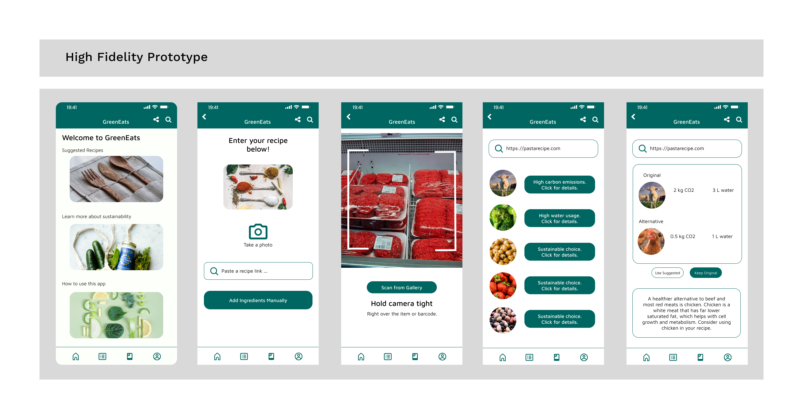

This was a group project I worked on for a UX one-day hackathon. I came up with the idea for our project which was
creating a consumer facing app where the user could input a recipe (via link, photo, manually), and the app would
summarize the environmental impacts of the ingredients. This includes resources used and greenhouse gas emissions from producing the ingredient
(for example, beef uses a lot of water), as well as the emissions associated with importing/accessing the ingredient.
The app would then suggest alternative ingredients to use that have less of an impact/are more sustainable.
We also added a feature to our app to be able to scan ingredients in the supermarket using a phone camera and have the app report back on the environmental impact of that product in real-time.
My main contributions were coming up with the idea for the app, creating user personas, mapping user flows, and designing wireframes as well as parts of the final prototype.
From the final screen designs below, I worked on the second and fourth screens. The second screen allows users to input their recipe, and the fourth screen shows a summarized list of the recipe ingredients and their environmental impact.
